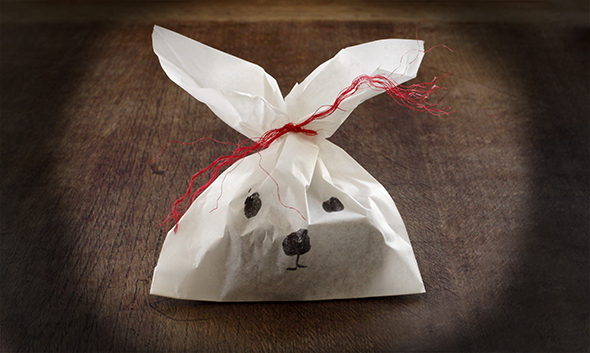
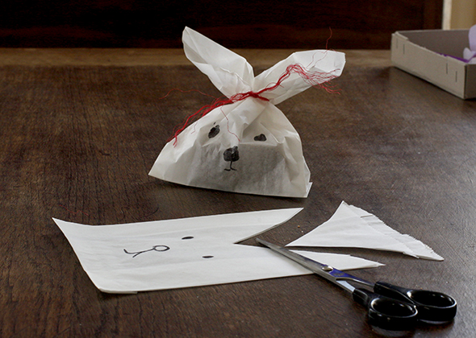

Occasion · Paper · Eastern · AnimalBunny bagsMarch 28, 2016  After seeing the bunny bags of hello, Wonderful, we made a simple paper bag copy;-). Sewing is not my thing. ← Moving eyesHappy Eastern! →